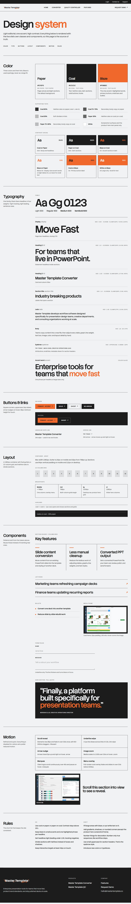

Master Template
Building a Presentation Automation Product from Concept to Launch
I founded Master Template and owned the full product arc: brand identity, UI design, Next.js marketing site, and campaign materials, using AI-assisted workflows to compress a multi-person production timeline into a solo operation.
- Role
- Founder, Brand Designer, UI Designer, Developer
- Type
- Product, brand identity, UI design, Next.js, AI-assisted workflow
The Situation
Presentation templates are one of the most universally painful problems in professional design. Inconsistent formatting, manual updates, brand drift, and hours lost to repetitive production work compound across every team that relies on them.
My Role
As founder, I owned the complete arc from initial conception to launch. That meant defining the product vision, building the brand identity, designing the UI in Figma, developing the marketing site in Next.js, and producing campaign materials in Adobe Creative Suite.
The Challenge
Design software is a crowded, skeptical market. A new tool needs to communicate its value instantly and look like it belongs alongside established products while still feeling human enough to earn trust with designers, marketers, and entrepreneurs.
My Approach
I developed a clean, business-forward visual identity that prioritizes clarity and confidence. Sharp typography, structured layouts, and a restrained color system work across product UI, marketing, and campaign contexts without losing consistency.
Design System Breakdown
The system is sleek, modern, and bold, built to speak the language of pitch-deck-centric teams across consulting, finance, marketing, startups, and enterprise sales. High contrast, sharp typography, and restrained accent color draw customers into a professional product story that feels fast, confident, and polished.

Design System
I added a public design-system page for Master Template so the brand could be evaluated as a working system, not just a finished marketing surface. It defines the Paper, Coal, and Blaze color model, typography scale, button behavior, layout rules, reusable component patterns, motion standards, and the do/don't rules that keep the product experience consistent.
Results
Master Template launched as a live active product with a fully realized brand system spanning product identity, UI direction, marketing site, and campaign materials. The production pipeline from concept through brand strategy, design execution, development, and launch was completed by one person.